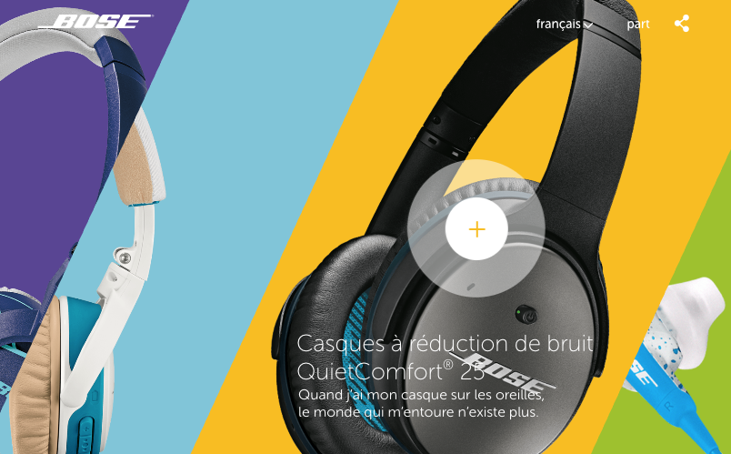

Wake up your static business website with purposeful web animation. Newton’s law states that an object in motion tends to stay in motion. The exception to this rule, of course, is when that object is on a website. The Internet is a powerful medium that serves up both static and animated features. This includes elements that shift, slide, travel and defy natural laws to the delight of audiences everywhere. So, it’s no surprise that web animation often attracts a user’s attention. Web animation may also provide marketers with a unique opportunity to highlight content and promote products and services like never before.
The right type of web animation can encourage purchase, drive action or deliver a more enjoyable user experience. Choosing a specific style of movement helps define a creative direction, from sophisticated to dramatic or humorous. Subtle animated transitions, slide-in effects or fade outs can be also designed to pique curiosity and encourage further exploration.
They snooze, you lose! Try to wake up this site and see the power of interaction combined with web animation.
Marketing’s ultimate purpose is to capture attention, impact behavior, and drive specific action. Movement through web animation is a powerful means of completing all those objectives. Combined with interactivity, web animation has the power to amplify engagement exponentially. Exactly how, you ask? Let us review some of the ways:
Video
Video has always been one of the most effective tools of communication. Its use on a web page or featured prominently as a large backdrop is an instant attention grabber. Video incorporates both sound and movement and can be used to tell even the shortest of stories. Custom video truly is a superb way to connect with audiences on an emotional level.
Shwood is an eyewear company that uses video in the most sparing yet elegant way. This short video does a wonderful job of highlighting the product in context. Switching your static homepage background to one with video is a simple yet effective way to boost conversion. In fact, according to a study conducted by FoodBloggerPro, this swap alone led to a whopping 138% improvement in online conversion.
Sliding
A carousel that rotates automatically, or one with arrows that encourages a user to interact via clicks, is an effective way to share smaller pieces of a larger story. The interactive PowerSchool website contains one such example. Inside you’ll notice additional movement within the carousel slides that incorporates design elements that fade into view and slide both vertically and horizontally.
Within the PowerSchool site, it’s easy to discover resources for a specific type of distinct user group. Content tailored to a user’s key area of interest is generated and served up for viewing upon a simple click of a button. This allows a user to interact with the website seamlessly and allows a digital agency to create a more personalized experience based on the unique user group.
Consumer surveys suggest that the main reason some people don’t shop online is because of the absence of pleasurable experiences and social interaction. Over the last several years, brands are taking advantage of modern web technologies to change that sentiment. Many of them, including Neiman Marcus and Juice Beauty, are delivering more satisfying shopping experiences that include using functional elements as carousels.
Drag and Drop
Another way to entice interactivity while incorporating web animation, is by using a drag and drop feature. Bernstein Display is one business that makes particularly creative use of this. On their website, users can drag and drop a variety of mannequin parts such as arms, legs, torso and heads to create wild, unexpected combinations. The powerful feature allows Bernstein’s audience to interact deeply with an array of products while learning about the distinct types of customizations available.
Another example of drag and drop functionality can be found on our very own digital agency website under the Work section here.
Transitions
Web page transitions range from simple to intricate, and can enhance a user’s experience by providing context and visual continuity. When done well, page transitions can also reinforce branding and heighten engagement. This French Bose website does a terrific job at drawing you into the world of each set of headphones. Hover over a box on the home page and the headphones come forward. Click on the product, and a box opens to further immerse yourself into product details and the brand itself.

Web Animation
HTML5 and CSS3, can be used to code all sorts of customized movement from scratch. The top of the Bernstein Display features a highly custom introduction to the brand, services and rich heritage. The web animation is quite compelling, and is used to draw an audience in and dramatically increase online engagement.
Subtle web animation can add interest to your brand and add character to your company’s identity. Drybar is another example of a site that uses HTML5 and CSS3 in fresh, inviting ways. In addition to the sliding feature on the homepage, Drybar’s entire website is filled with gratifying web animations. When you move your mouse over the little hairdryer, it bounces. Hover over the icons in the navigation, and each respond with a small visual wink.
Blending web animation with compelling visual design allows a Digital Agency to personalize experiences for vastly diverse types of consumers. Beyond that, movement can help drive important behaviors like engagement and conversion.
An introductory call with our team will reveal how purposeful web animation can improve the user experience and contribute to the success of business objectives and marketing goals.